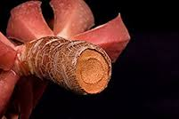
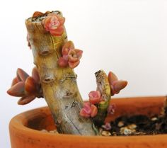

Stem Cuttings
Stem cutting propagation is incredibly simple. All you have to do is cut your plant at the stem, which is what some call "beheading". Let the cutting callous up for a few days (3-4), and then proceed to try and propagate. The place from which you beheaded your plant will also continuing growing.
There are also two ways to try to propagate your cutting.
One way is planting the cutting as it is and treating it as a normal plant. The plant will usually root and begin to grow.
The other method, which is a bit less traditional but a favorite for many is trying to root the plant first. This can be done by placing the cutting in a dark glass bottle of water with just the bottom centemeter or so submerged. Replace the water every two days and watch for roots. It may take many weeks for the plant to root, however if and when it does, pot your plant as normal and continue watching it grow.

An example of a beheaded plant that was left to callous for a few days. We can see the plant does not appear to be wet and is ready to be planted.

Pups on a plant that has recently been beheaded and shows the succulent's ability to self propagate.